

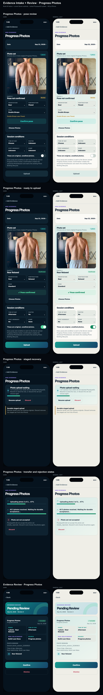
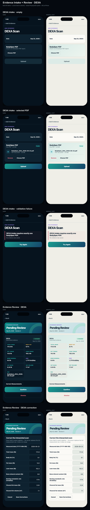

Evidence Intake + Review
Build 85 content and workflow authority translated into the locked dark and Mineral Light system. Every pair has identical geometry and content.

Generic intake and generic review

Progress Photos intake

DEXA intake and correction
